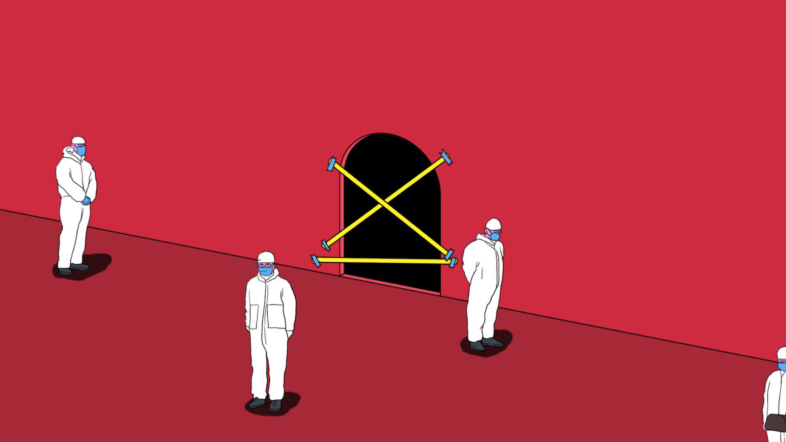
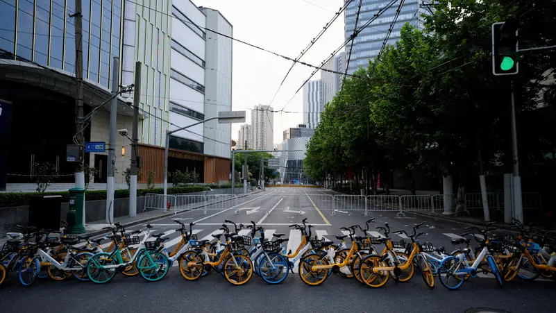
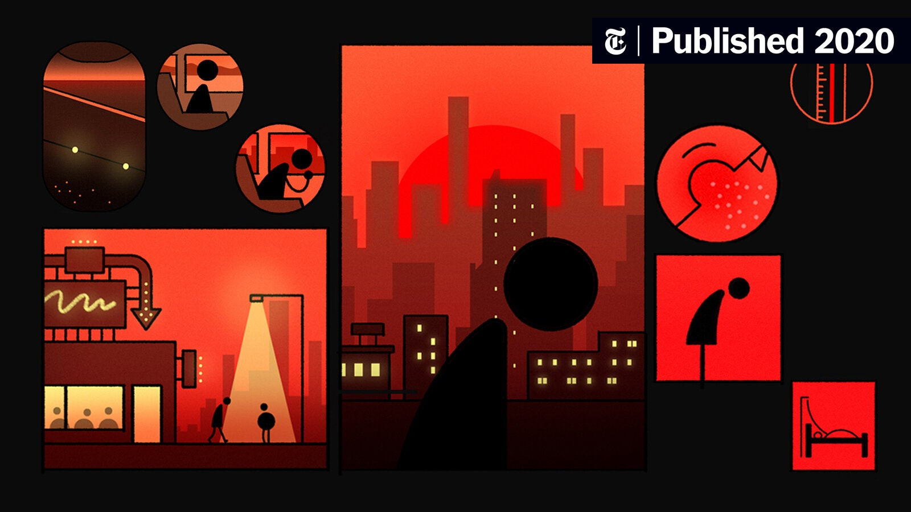

Data Source:
Covid Risk Area:
Dataset 1: 20-07-29 -
22-04-15
Dataset 2: 22-04-16 - 22-12-24
Infection:
CSSE, Johns Hopkins University
In China, when an infected person is identified, all close contacts are required to undergo a 14-day quarantine with multiple rounds of PCR testing.[26] In order to minimize the risk that these close contacts pose for outbreak containment, China has implemented quarantine in centralized facilities for those deemed to be at the highest-risk of infection.[23] Secondary close contacts (contacts of close contacts) are sometimes required to quarantine at home.[23]
Source: Wikipedia Zero-COVID

Areas other than risk areas

High-risk area without new infections for 7 consecutive days is downgraded to medium-risk area

Areas where cases and asymptomatic infected persons live, and areas such as workplaces and activities with high activity and high risk of outbreak transmission.
Reference: 新型冠状病毒肺炎防控方案（第九版）
All contents are created only for academic use.